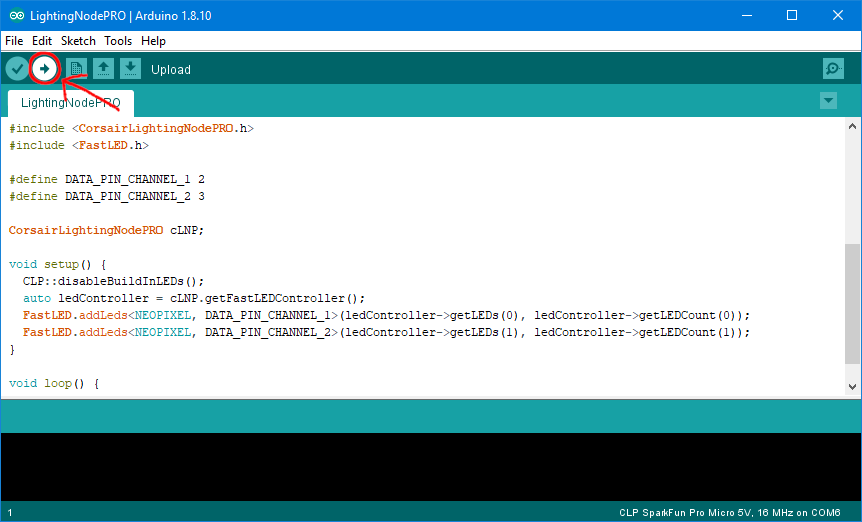

This library can be used to integrate custom/unofficial RGB strips with iCUE.
Features
- Add support of the Lighting Node PRO protocol to Arduino.
- Control LEDs with the Corsair Link or the iCUE software.
- Easy to use with FastLED.
- Supported LED chipsets.
- Persistent settings for use without a USB connection.
- Use multiple devices at the same time.
- Repeat or scale LED channels to arbitrary size.
Supported Devices
- Lighting Node PRO
- Commander PRO
- Lighting Node CORE
- LS100 Smart Lighting Controller

Getting started
This project is an Arduino library called "Corsair Lighting Protocol". It can be used to control Arduino boards with iCUE. This project provides example sketches for easy use with Arduino IDE.
Requirements
The library is compatible with all boards using the MCU ATmega32U4. This includes Arduino Leonardo, SparkFun Pro Micro, and Arduino Micro. It also supports the Arduino Uno and Arduino Mega, but this requires the HoodLoader2 bootloader, see this wiki for more details. It is not compatible with Arduino Nano. In the rest of the documentation "Arduino" is used as a synonym for all supported boards regardless of the manufacturer.
When you have problems with a board not listed here, please open an Issue.
Install the libraries
To use this library you must install it with the Library-Manager. Open the Library-Manager in Arduino IDE via Tools->Manage Libraries... Search for "Corsair Lighting Protocol" and install the Corsair Lighting Protocol library. This library also requires the FastLED library. Search for "FastLED" in the Library-Manager and install the FastLED library.
Create a Lighting Node PRO
This guide will teach you how to create a Lighting Node PRO with an Arduino Leonardo compatible board. If you have an Arduino Uno or Mega, see the other guide.
Open the example "LightingNodePRO", you can find it in Arduino IDE in the File menu->Examples->Corsair Lighting Protocol->LightingNodePRO. If you can't open the LightingNodePRO example the Corsair Lighting Protocol library is not installed correctly.
 open example sketch
open example sketch
Install the CLP Boards. They can be installed by following the CLP Boards installation guide. After installation it should be possible to select the CLP Boards in the Arduino IDE as shown in the screenshot below.
 select CLP Board
select CLP Board
Upload the "LightingNodePRO" sketch to your Arduino.
upload sketch
Do the wiring. For more information on how to wire the leds and how to set up the LEDs in the code see the links.
 the wiring
the wiring
- Verify your device works as expected. Open the Windows settings->devices->Other devices. Somewhere in the list of devices, there should be a device called "Lighting Node PRO".
- Now open iCUE there you should see the "Lighting Node PRO".
Use the Lighting Node PRO

In iCUE open the "Lighting Setup" tab of the Lighting Node PRO(LNP) and set for both Lighting Channels the device to "RGB Light Strip" and the amount to a tenth of the LEDs you have. iCUE groups the LEDs into groups of ten. So if you have 20 LEDs, set the amount to 2. Now you can create lighting effects in the "Lighting Channel #" tabs.
Documentation
How it works
This library uses the USB HID interface of the ATmega32U4. After uploading a sketch with the library and selected CLP Boards, iCUE recognizes the Arduino as a Corsair device, because the CLP Boards use USB IDs of Corsair. In iCUE you can then select the device and set some lighting effects. iCUE sends these via the HID protocol to the Arduino. These commands are understood by the library and converted into lighting effects on the RGB strips connected to the Arduino. The FastLED library is used to control the LEDs.
Use of multiple devices
Each device has two unique IDs, that is, they should be unique. You must give each device a unique ID. There are two IDs that must be changed Serial Number and DeviceID.
The Serial Number can be set in the constructor of CorsairLightingProtocolHID and CLPUSBSerialBridge as shown in the example.
The Serial Number MAY only consist of HEX characters (0-9 and A-F).
The DeviceID can be set with the setDeviceID function of CorsairLightingFirmware.
Alternative
The DeviceID can be changed with the DeviceIDTool. Upload the DeviceIDTool sketch and then open the Serial monitor with baudrate 115200. The tool displays the current DeviceID, you can type in a new DeviceID that is saved on the Arduino. After that, you can upload another sketch.
Repeat or scale LED channel
You can repeat or scale LED channel controlled by iCUE onto physical LED strips. This is very useful if you have very long LED strips that are longer than 60/96/135 LEDs. This is the maximum number iCUE supports.
To repeat or scale a LED channel you must apply the CLP::repeat or the CLP:scale function in the update hook of the FastLEDController. See the RepeatAndScale example for the complete code. Both functions take the FastLEDController pointer and the channel index as arguments. Additionally, the repeat function takes as an argument how often the LED channel should be repeated. For example, if you want to duplicate the channel you must pass 2 as argument. The scale function takes as third argument the length of the physical LED strip to which it scales the channel using integer scaling. For example you have 144 physical LEDs on you strip and 60 on the LED channel. Then the third argument of the scale function is 144.
For both functions it's important, that the CRGB arrays have at least the length of the physical LED strip. This means if your LED channel from iCUE has 50 LEDs and you use the repeat function to control 100 physical LEDs you MUST declare the CRGB array at least with a length of 100.
License
This project is licensed under the Apache 2.0 License.
DISCLAIMERS
This is a DO IT YOURSELF project, use at your own risk!

{kind=link}
{kind=link}